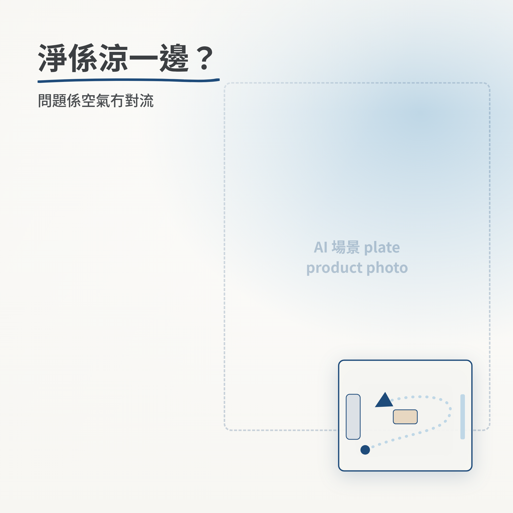
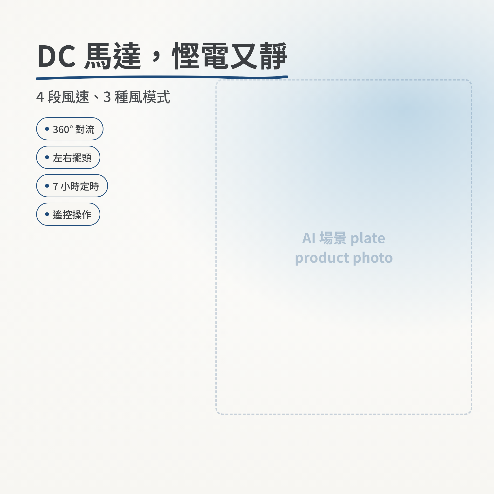
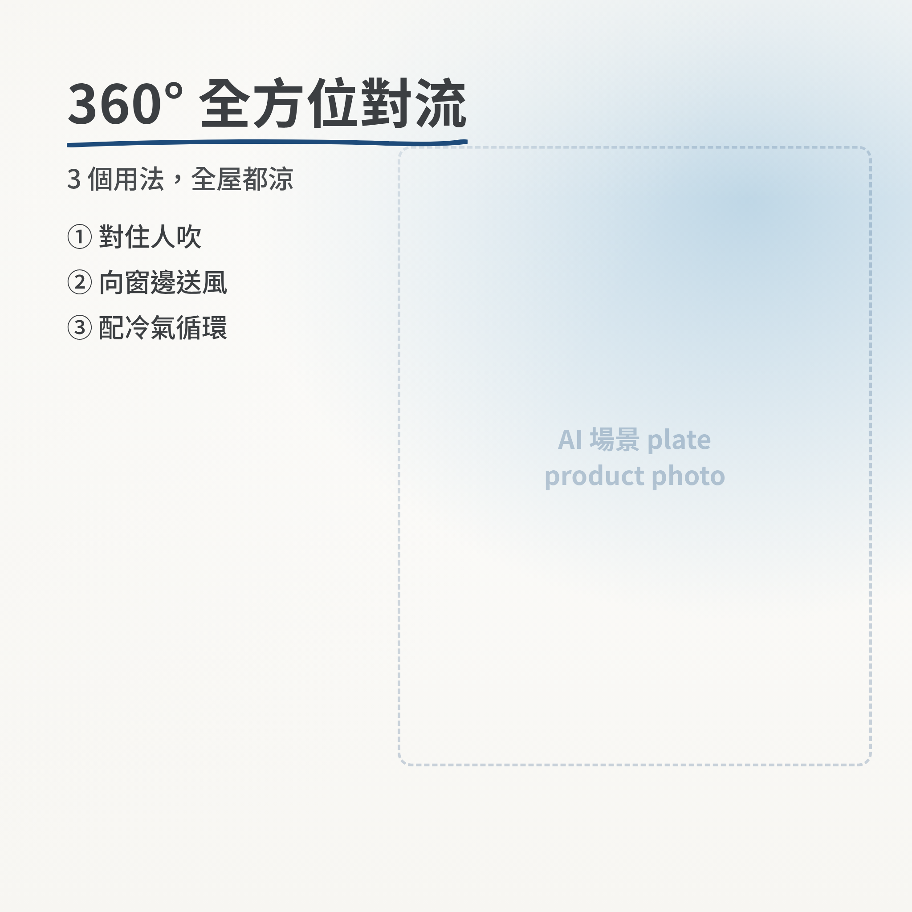
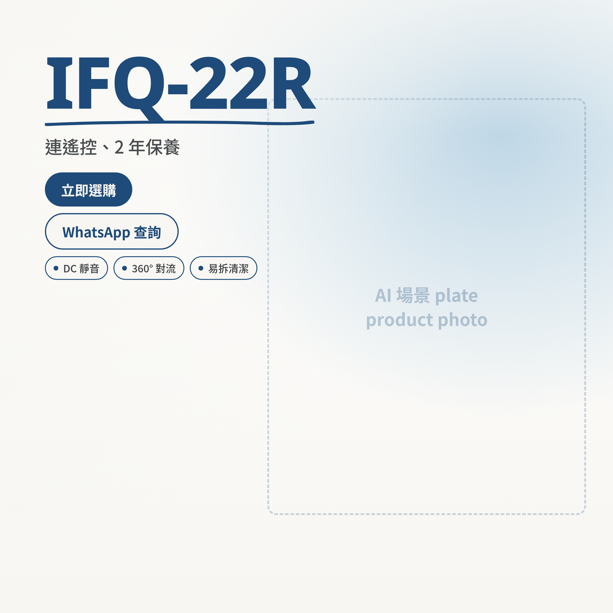

Refresh this page (Ctrl/Cmd+R) after re-running the renderer to see changes.




brand/templates/carousel/_proof/index.html — in a browser._proof/ifq22r-06-cta.html directly (self-contained; use the browser inspector to try CSS).FRAMES array in render.mjs. Edit colours/fonts/sizes: tokens.css.brand/templates/carousel/:
PREVIEW=1 node render.mjs (all, placeholder) ·
PREVIEW=1 node render.mjs 03 06 (some) ·
node render.mjs (composite over real plates).